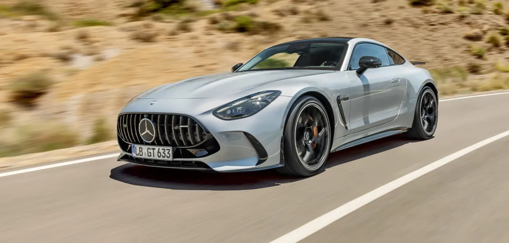

Mercedes GT Coupé
The Mercedes-AMG GT Coupé is a high-performance luxury sports car designed to combine dramatic styling with strong performance and everyday usability. It has a long, low-slung shape, a wide stance, and a luxurious cabin featuring modern digital displays and premium materials. Depending on the version, it can offer seating for two or four people, giving it more practicality than a traditional two-seat sports car.


Performance is the main focus of the GT Coupé, with powerful engines, sophisticated suspension, and advanced all-wheel-drive systems available on many versions. AMG variants deliver rapid acceleration and sharp handling while still providing a relatively comfortable driving experience. Overall, the GT Coupé is aimed at drivers who want sports-car performance and excitement combined with Mercedes-Benz luxury and refinement.